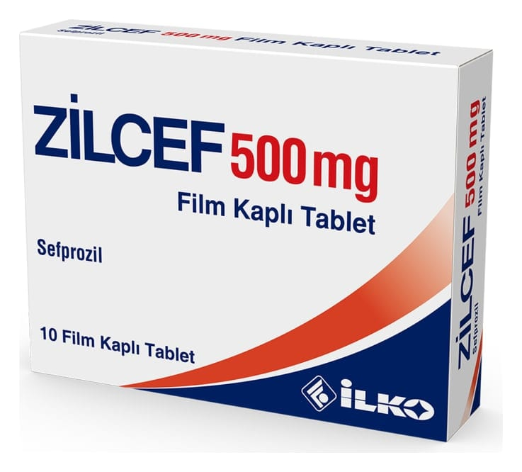

Zilcef 500 mg Film Kaplı Tablet ,10 Tablet

Ne için kullanılır
KT · Bölüm 1. ZİLCEF, 10 ve 20 film kaplı tabletlik ambalajlarda kullanıma sunulmaktadır.
. ZİLCEF, etkin madde olarak 500 mg sefprozile eşdeğer miktarda sefprozil monohidrat içerir.
.* ZİLCEF beta-laktam antibiyotikler olarak adlandırılan bir ilaç grubuna dahildir.
. ZİLCEF, yetişkinlerde boğaz, bademcik veya sinüs iltihabı gibi üst solunum yolu enfeksiyonlarının, bronş iltihabı ve zatüre gibi alt solunum yolu enfeksiyonlarının, deri ve yumuşak doku enfeksiyonlarının ve kısa süreli idrar kesesi iltihabı (sistit) dahil komplike olmayan idrar yolu enfeksiyonlarının tedavisinde kullanılır.
* Çocuklarda ise boğaz, bademcik, orta kulak veya sinüs iltihabı gibi üst solunum yolu enfeksiyonlarının ve komplike olmayan deri ve yumuşak doku enfeksiyonlarının tedavisinde kullanılır.